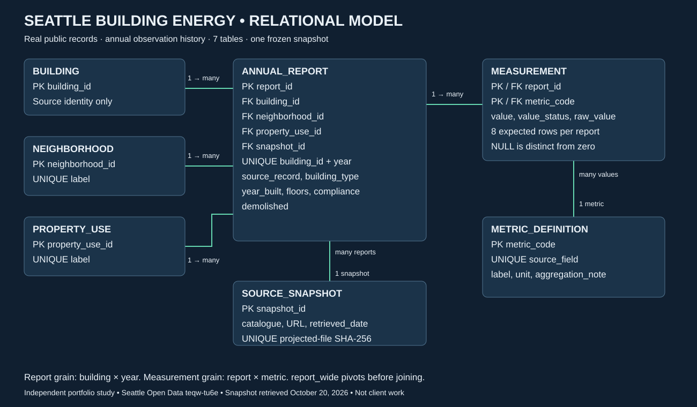

PUBLIC-DATA PORTFOLIO • DATA MODELING
Seattle building energy,
modeled for traceability.
A relational SQL model preserving annual reports, metric units, source values, and missingness. Independent study using real Seattle public records; not client work.
Official source catalogue38,309annual reports
3,871building identifiers
306,472measurement records
7 tables2015–2025 source years
From business concepts to executable SQL
A building has annual reports. Each report carries its reported classifications and eight measurements; each measurement refers to a metric definition with a unit. Every report links to the frozen source snapshot.

Annual attributes stay on the report, so later classifications do not overwrite earlier observations. One source snapshot is modeled; download revisions require an explicit future versioning design.
Actual query outputs
Generated from the included database, not illustrative figures. 2024 examples are an explicit analysis window; all 2015–2025 source records remain in the model. Adjacent-year label changes can reflect reporting corrections.
Annual Reporting Coverage
Reported Classification Changes